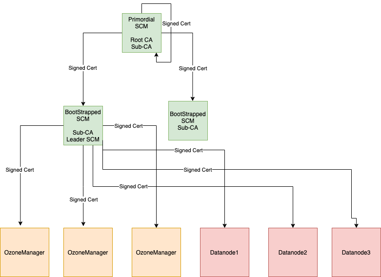

Ozone has two metadata-manager nodes (Ozone Manager for key space management and Storage Container Management for block space management) and multiple storage nodes (Datanode). Data is replicated between Datanodes with the help of RAFT consensus algorithm.
To avoid any single point of failure the metadata-manager nodes also should have a HA setup.
Both Ozone Manager and Storage Container Manager supports HA. In this mode the internal state is replicated via RAFT (with Apache Ratis)
This document explains the HA setup of Storage Container Manager (SCM), please check this page for HA setup of Ozone Manager (OM). While they can be setup for HA independently, a reliable, full HA setup requires enabling HA for both services.
HA mode of Storage Container Manager can be enabled with the following settings in ozone-site.xml:
<property>
<name>ozone.scm.ratis.enable</name>
<value>true</value>
</property>
One Ozone configuration (ozone-site.xml) can support multiple SCM HA node set, multiple Ozone clusters. To select between the available SCM nodes a logical name is required for each of the clusters which can be resolved to the IP addresses (and domain names) of the Storage Container Managers.
This logical name is called serviceId and can be configured in the ozone-site.xml
Most of the time you need to set only the values of your current cluster:
<property>
<name>ozone.scm.service.ids</name>
<value>cluster1</value>
</property>
For each of the defined serviceId a logical configuration name should be defined for each of the servers
<property>
<name>ozone.scm.nodes.cluster1</name>
<value>scm1,scm2,scm3</value>
</property>
The defined prefixes can be used to define the address of each of the SCM services:
<property>
<name>ozone.scm.address.cluster1.scm1</name>
<value>host1</value>
</property>
<property>
<name>ozone.scm.address.cluster1.scm2</name>
<value>host2</value>
</property>
<property>
<name>ozone.scm.address.cluster1.scm3</name>
<value>host3</value>
</property>
For reliable HA support choose 3 independent nodes to form a quorum.
The initialization of the first SCM-HA node is the same as a none-HA SCM:
bin/ozone scm --init
Second and third nodes should be bootstrapped instead of init. These clusters will join to the configured RAFT quorum. The id of the current server is identified by DNS name or can be set explicitly by ozone.scm.node.id. Most of the time you don’t need to set it as DNS based id detection can work well.
bin/ozone scm --bootstrap
In some environment – such as containerized / K8s environment – we need to have a common, unified way to initialize SCM HA quorum. As a remained, the standard initialization flow is the following:
scm --initscm --bootstrapThis can be changed with using ozone.scm.primordial.node.id. You can define the primordial node. After setting this node, you should execute both scm --init and scm --bootstrap on all nodes.
Based on the ozone.scm.primordial.node.id, the init process will be ignored on the second/third nodes and bootstrap process will be ignored on all nodes except the primordial one.

In a secure SCM HA cluster on the SCM where we perform init, we call this SCM as a primordial SCM. Primordial SCM starts root-CA with self-signed certificates and is used to issue a signed certificate to itself and other bootstrapped SCM’s. Only primordial SCM can issue signed certificates for other SCM’s. So, primordial SCM has a special role in the SCM HA cluster, as it is the only one that can issue certificates to SCM’s.
The primordial SCM takes a root-CA role, which signs all SCM instances with a sub-CA certificate. The sub-CA certificates are used by SCM to sign certificates for OM/Datanodes.
When bootstrapping a SCM, it gets a signed certificate from the primary SCM and starts sub-CA.
Sub-CA on the SCM’s are used to issue signed certificates for OM/DN in the cluster. Only the leader SCM issues a certificate to OM/DN.
<property>
<config>ozone.security.enable</config>
<value>true</value>
</property>
<property>
<config>hdds.grpc.tls.enabled</config>
<value>true</value>
</property>
Above configs are needed in addition to normal SCM HA configuration.
Primordial SCM is determined from the config ozone.scm.primordial.node.id. The value for this can be node id or hostname of the SCM. If the config is not defined, the node where init is run is considered as the primordial SCM.
bin/ozone scm --initThis will set up a public,private key pair and self-signed certificate for root CA and also generate public, private key pair and CSR to get a signed certificate for sub-CA from root CA.
bin/ozone scm --bootstrapThis will set up a public, private key pair for sub CA and generate CSR to get a signed certificate for sub-CA from root CA.
Note: Make sure to run –init only on one of the SCM host if primordial SCM is not defined. Bring up other SCM’s using –bootstrap.
SCM HA uses Apache Ratis to replicate state between the members of the SCM HA quorum. Each node maintains the block management metadata in local RocksDB.
This replication process is a simpler version of OM HA replication process as it doesn’t use any double buffer (as the overall db thourghput of SCM requests are lower)
Datanodes are sending all the reports (Container reports, Pipeline reports…) to all the Datanodes parallel. Only the leader node can assign/create new containers, and only the leader node sends command back to the Datanodes.
After starting an SCM-HA it can be validated if the SCM nodes are forming one single quorum instead of 3 individual SCM nodes.
First, check if all the SCM nodes store the same ClusterId metadata:
cat /data/metadata/scm/current/VERSION
ClusterId is included in the VERSION file and should be the same in all the SCM nodes:
#Tue Mar 16 10:19:33 UTC 2021
cTime=1615889973116
clusterID=CID-130fb246-1717-4313-9b62-9ddfe1bcb2e7
nodeType=SCM
scmUuid=e6877ce5-56cd-4f0b-ad60-4c8ef9000882
layoutVersion=0
You can also create data and double check with ozone debug tool if all the container metadata is replicated.
bin/ozone freon randomkeys --numOfVolumes=1 --numOfBuckets=1 --numOfKeys=10000 --keySize=524288 --replicationType=RATIS --numOfThreads=8 --factor=THREE --bufferSize=1048576
// use debug ldb to check scm db on all the machines
bin/ozone debug ldb --db=/tmp/metadata/scm.db/ ls
bin/ozone debug ldb --db=/tmp/metadata/scm.db/ scan --with-keys --column_family=containers
SCM HA can be turned on on any Ozone cluster. First enable Ratis (ozone.scm.ratis.enable) and configure only one node for the Ratis ring (ozone.scm.nodes.serviceId should have one element).
Start the cluster and test if it works well.
If everything is fine, you can extend the cluster configuration with multiple nodes, restart SCM node, and initialize the additional nodes with scm --bootstrap command.